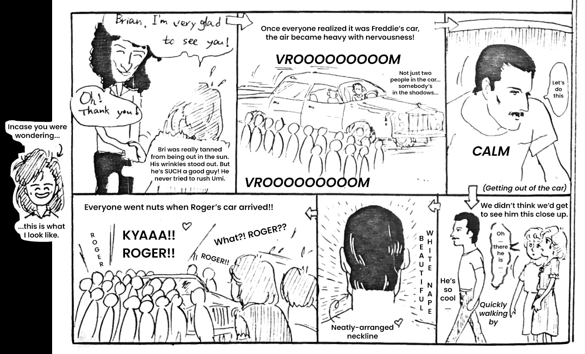
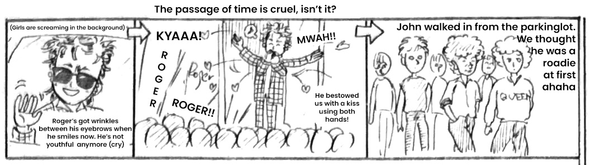
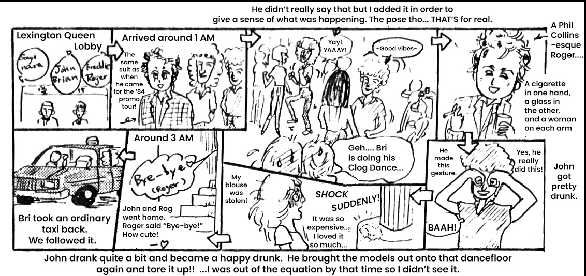
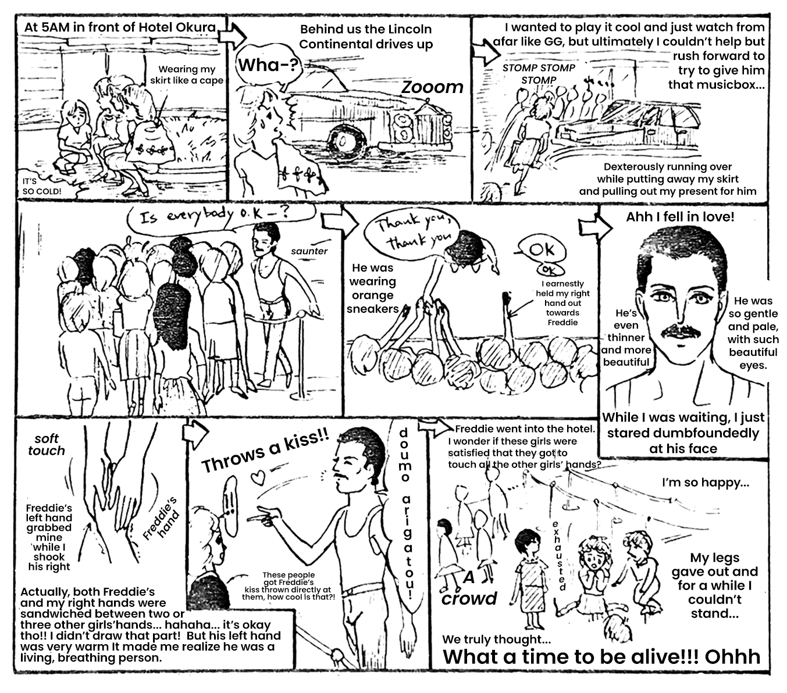
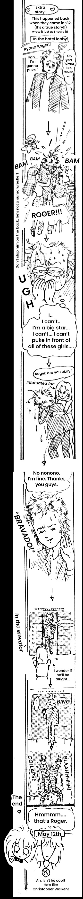

Off-Day Report
...nothing like a follow-up!
5/6 — The other three arrived. Brian was accompanied by his wife Chrissy. No kids were with them this time. As always, Chrissy was wearing a long skirt...
5/8 — After the concert, Freddie [the rest was censored in the version I have.]
On the other hand, the other members were on "Tonight's Hit Studio" on Fuji TV. We waited at the back door but they all got out and into the cars so quickly that we barely saw anything. After that, because I couldn't find my friend, I gave up for the day.
5/9 — Arrival to the Budoukan was around 3 PM for Bri and Rog, 4 PM for John, and 5 PM for Freddie. Freddie rode in a limo with the windows down, which is very rare. A fan said he waved to us but I didn't notice. Today, as always, Chrissy wore a long skirt...
After the concert, Bri got in a limousine and went to Serina [a restaruant] in Roppongi. There were barely any other fans around, so we were able to get close to see. He signed things for us and shook our hands. The Mutual Aid Society's own Play Boy has said he's shaken hands with Bri four times now! And then there was Freddie's car...!! We didn't think we'd see the other members' cars, let alone Freddie's... since we figured we wouldn't see it, Umi and I were completely taken by surprise. Around this time a bunch of fans were gathering and it had become quite crowded, but before we knew it, Freddie's car drove up like ZOOOOOOM... and everyone was silent when they saw. Freddie got out of the car with a very calm expression. Even from only a meter away, Freddie has an extremely beautiful and aloof mood about him. With a complexion that was whiter than I had thought, he's a slim and delicate person. Not too tall, shorter than I would have imagined after seeing him onstage. "No way... he's moving right in front of my eyes, Freddie's right there~!" I kept whispering in my heart.
By then, all the fans gathered on the scene were hushed. No one screamed or said "FREDDIE!" or anything. They didn't ask to shake his hand or anything at all. All we could do was earnestly watch him moving in front of our own eyes. And Freddie, without smiling or waving or even changing expressions at all, disappeared into Serina. For some reason, even though I stood there and watched everything he did with my own eyes, I barely have any memory of it... just the pure white nape of his neck as he went past me is the only image remaining that's terribly clear to me now... a beautiful hairline at the nape of his neck, cut straight across...

The next to come was Rog... I think? When his car drove up, fans snapped out of their earlier stupor with Freddie and a big commotion began. "KYAAAA!" "Roger, look over here!" We waived to him inside of his car, and he smiled and laughed and waved back. Somehow I was still in front this time too. A couple of minutes before when Freddie was there, I could've taken a step forward and touched him... Mutual Aid Society's own Jun banged on the window of Rog's car with her hand. She's a Rog fan—a Rog fan who had lost all sense of self and sanity and has no memory of it at this time. Of course, all the girls started screaming. That fool...
We noticed a group of foreign men in Queen tour jackets walking up, and thinking to ourselves, "Oh look! A bunch of roadies, hard at work..." paid them no mind. But in that group of unsuspecting roadies was John. If you're doubting me and thinking, "Why would John ever be walking up like that??" ...I saw it with my own eyes as they passed, clear as day. When fans began to yell "John!!", he only lowered his head and disappeared inside. Maybe he wasn't in a very good mood. That's all for that day, we went home at that point. I think this was a dinner that EMI had organized for them. After that, I heard that everyone let loose clubbing, except for Brian...

5/10 — They had this day off. Seems as though most of them went shopping. When people were waiting for the members to get back to their hotel, Freddie returned. (I wasn't able to come this day, so I dunno all the details.) But, since they saw him from far away and he was with a jacked bodyguard, Umi et al mistook Freddie for a pro-wrestler! They told me they were impressed, thinking things like "Oh wow, I guess pro-wrestlers come through here too!" But, since the sight was so strange, Jun said, "I'll go check inside, cuz it could be Punch Itoh!" ("Punch Itoh" being Itoh of the Tokyo Patrol. He has a punch perm.) (At some point, Jun told me she was into Punch Itoh, but at a later date she denied saying this.) Eventually Jun came running back, saying "I dunno what to think cuz that whole place is swimming in punch perms!" (This statement was just to make everyone laugh, I'm sure!) In the end, only Jun was able to see Freddie, as Umi and the others were looking elsewhere, and were unable to see anything. (But Jun has bad myopia so honestly, she probably didn't see anything either...)
5/11 — After the concert we waited for the band members to come out, but since we waited in the wrong spot it was no dice. On top of that, since we were so laid back, thinking "Oh, they haven't come out yet", we posed for a commemorative Mutual Aid Society photo and ate snowcones afterwards. We're morons...
Somehow, Jun and Play Boy passed by Freddie's limo, but the windows rolled up as they got close, so once again, no dice.
Since today was their last day in Tokyo, we knew we ought to check out the Lexington Queen [a nightclub in Roppongi where celebrities often went], and we entered with conviction. Inside, balloons printed with "Sayonara, Freddie, Brian, John, Roger" confirmed our decision to be a sound one. But as time went on and we waited and waited with no sign of them, we began to get anxious. Then we overheard some waiters in a private convo saying "Roger's having a party in his room at the hotel", and we felt secure again. "They're still there but they're on their way." We heard this with our Dumbo ears...and then the club started playing Another One Bites the Dust. Then, for a slow dance, they played te wo toriatte. That's not a great choice for some cheek-to-cheek time.
By now it was 1 AM and the members minus Freddie finally came in. Since it was Saturday, the place was already packed, and then there were crowds of fans on top of that. Roger took the same seat he took when he was here in March for promotional purposes. Rog, John, and Bri all had beautiful foreign model-looking women with them. Since John and Bri's noble wives had accompanied them on this trip to Japan, and those women might as well be models anyway, I'm pretty sure these weren't groupies. For a while they all sat in box seats in the back, but before long BRIAN PULLED THE WOMAN HE WAS WITH OUT ONTO THE DANCE FLOOR. Then John pulled the woman HE was with out to dance as well! To be blunt, Bri was wearing clogs, and he danced like Sally, not riding the rhythm at all... so it wasn't a great sight... don't wear clogs to a disco! Afterwards, we decided to call Bri's dance the Clog Dance. John, who of course is known as the King of Disco, was in a great mood and really tore it up!! It was so cool! Rog single-mindedly stayed in his seat with a group of models, chatting radiantly. John wore ski pants... like a modern man would.
We also began to dance, but... it was at this point that I realized that someone had taken the blouse I had been wearing! It was an ¥18,000 Ropé designer blouse that I had bought especially for Queen-chasing duties on this Japanese tour...!!! The doom and depression made me feel like dancing my sorrows away. When John and Bri returned to their seats, Jun et al were able to shake their hands without me... but I don't care... it hadn't even been a week since I bought that blouse... ughhhhh.
John drank quite a bit and became a happy drunk. Again he brought the models out onto that dance floor and cut a rug! ...I was out of the equation by that time though and I didn't see it.
The band left the Lexington at around 3 AM. Rog and John left quickly, especially John who left so swiftly we didn't even see him go! Since Bri lumbers behind them, we were out of the club before he was. Bri got in an ordinary taxi. We also took a taxi to the Hotel Okura in anticipation of his arrival. We arrived at the hotel, but... pathetically, we didn't know if Bri was coming to the main building or the annex. There were about five or six people waiting in front of the annex, so we figured that must be where Bri would show up, so we decided to wait there. But he never came. (Turns out he had already arrived at the main building quite a while ago...)

By 5 AM there were around ten fans (including us) waiting outside the annex. Down in the middle of [this part was blacked out as well.] And then, from the other side, a blue Lincoln Continental pulled up. Freddie's car!! Immediately, other fans came to hang around the hotel entrance. I threw my skirt off from around my shoulders and rushed to the entrance. (I was planning to just gaze from afar like [censored] and the rest... but I don't have their discipline...). Instead I made an example of myself in the front row again. When Freddie got out of the car, one girl shrieked "KYAAA!", but other girls could only gaze at Freddie, standing there before their very eyes. Again, there wasn't any commotion like there was with Roger. Freddie seemed to be in a great mood, and as he walked past he turned to us fans and said, "Is everybody OK?" in a calm manner. Then in the doorway, he turned to face us fans, and I got a handshake from him! I wanted to give him the wooden musicbox I had spent a year making for him (it had "Queen" engraved on the leather lid) but the right time never came, so I gave up. (Thinking about it now, I should've just handed it over even though there wasn't any time... ugh, SO much regret.). Instead, I decided to just humbly try for a handshake, so I held out my right hand. But Freddie's hand had about three other girls' hands on it at once, so things didn't look good for me... I held my hadn't out right in front of his until it was free. But I just couldn't get myself to forcibly snatch at his hand... so ahhh, I figured it was impossible... and decided it was time to give up. But then Freddie grabbed my hand with both of his and wrapped it up in a handshake...! (But other girls' hands were shoved between ours too...)
While shaking hands, Freddie said things like "Thank you, thank you, okay, okay..." very calmly and mindful of the fans. It made me so happy to know he was giving us such a kind smile. I saw him from about 50 cm away... other than that, I remember how pure white his skin was, like I said before. It shone through his bronzer. Delicate and thin-bodied. With a smile on his lips... sigh.
He looked even more delicate than I had thought! And just as (redacted) had said, he was reeaaally kind to fans. Ahh! Freddie's the best! I'm convinced there's no better person in the world. And he kept smiling! "Doumo arigatou!" he said, throwing us a kiss. He must be one of those people whose every move is beautiful. I was wearing my skirt like a cape, shivering, and my hands were really cold. But because of that, Freddie's hand felt so warm. It felt like a kindness. When I shook John's hand in '84, I remember thinking to myself "His hand is quite rugged", but Freddie's hand was very soft. I wonder if it's because he's a piano player...

As Freddie's figure disappeared into the hotel, I began to fall apart. I felt so exhausted after everything. I lost my composure and began to cry. I wonder if the image of me trembling in my skirt could be seen from inside the hotel. How pitiful!
As it happens, I have no idea why Freddie was suddenly in such a good mood. "Well, he's surely riding high after a great concert," I thought, but to be completely honest I think it was because he was coming back from a gay bar. (After eating Chinese cuisine, I heard he went to a gay bar.)
After all of this, Punch Itoh said, "They're going to be asleep until noon, so you guys should go get some rest."
I said, "You should too. Goodnight!"
"Yep, goodnight!"
...and with that, we took a nap in the Roppongi Arby's. We slept in the Arby's until 9:30 AM. Then we put on makeup and went back to Okura. At around 2 PM, the band members went to Tokyo Station. Since Punch Itoh had told me, "Roger and Freddie are staying in the side building, and John and Brian are in the main building, don't forget!" I was able to see them off without incident. Thank you, Itoh!! I gave the musicbox present to him as well so hopefully it will get to Freddie. After that, we went to the Serina, the Lexington, and Itatoma. We all cried together. Ahhhh, so tired! The end!
(We didn't go to Tokyo Station.)
Addendum: I stayed with (redacted!) while in Osaka, so I was unable to chase the band there.
